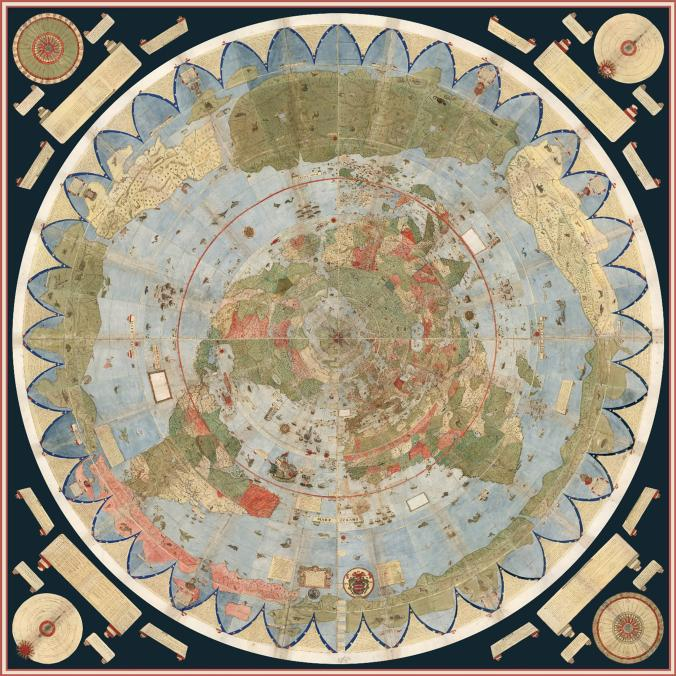

Farebná a zložito podrobná mapa z roku 1587 je pri plnom poskladaní viac ako deväť metrov krát deväť metrov.
Za posledných 430 rokov bolo jej 60 jednotlivých listov navzájom spojených ako atlas, ale teraz sa konečne spojili - digitálne - aby odhalili úplný obraz sveta, ako to bolo vtedy chápané a aký bol svet.
Zobrazujúca tie najpresnejšie ale aj fiktívne údaje 16. storočia. Ako prvá využíva pohľad ako keby z vesmíru dolu na severný pól, toto je technika ktorá sa začala využívať až v 20 storočí.
